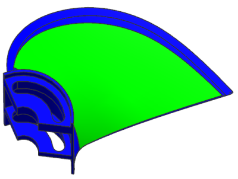
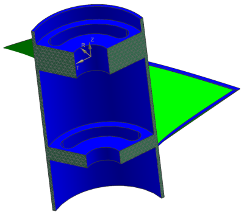
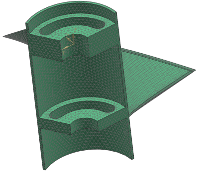
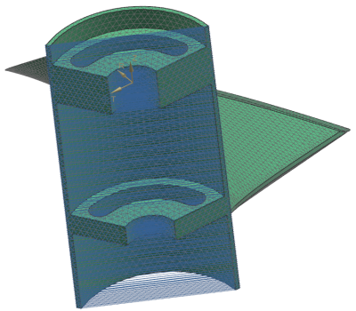
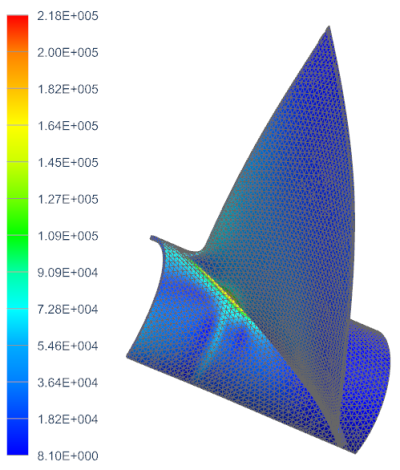

Cyclic symmetry project
Cyclic symmetry occurs when a structure and loading are repeated about an axis. Automatic Coupling in Advanced Simulation allows you to easily create cyclic symmetric models by automatically coupling the displacements occurring on cyclic symmetric surfaces.
Objective
A marine propeller is shown below. Create a cyclic symmetric model and use the SOL 101 Linear Statics - Global Constraints solution sequence to examine stresses in the propeller when it spins at 5000 rpm.

Required data
|
Property |
Value |
|
Part |
propeller.prt |
|
Solution sequence |
SOL 101 Linear Statics - Global Constraints |
|
Idealization |
See note regarding cyclic symmetry |
|
Material |
Steel |
|
Mesh |
CTETRA10 Element size 0.15 in 3D tetrahedral mesh seeded with a 2D dependent mesh on cyclic symmetric faces |
|
Constraints |
See note regarding constraints |
|
Loads |
Apply a centrifugal load Angular velocity 5000 rpm |
Notes
To model the structure using cyclic symmetry:
-
Open the part file and start Advanced Simulation. Create idealized part, FEM, and Simulation files.
-
After making the idealized part the displayed part, use the Promote command to promote the body.
-
The propeller geometry is repeated three times. Use the Split Body command to isolate one instance of the repeated geometry.
-
After making the FEM the displayed part, turn off the display of the unused geometry.

-
Define the material and the physical properties and create a 3D mesh collector.
-
Use the 2D Dependent Mesh command to create a seed mesh of CTRIA6 elements on the cyclic symmetric faces. Select Symmetric as the 2D dependent mesh type and select Cylindrical as the Reference CSYS. When the 2D Mesh dialog box opens, select CTRIA6 as the element type, enter an element size of 0.15 in, and clear Export Mesh to Solver.

-
Use the 2D seed mesh to create a solid mesh of CTETRA10 elements. In the 3D Tetrahedral Mesh dialog box, enter an element size of 0.15 in. Assign the mesh to the mesh collector you created previously.

-
Use the Assign Nodal Coordinate System command to define a cylindrical CSYS as the nodal displacement CSYS. The Assign Nodal Coordinate System command is found under the Nodes and Elements tab in the Nodes group.
-
After making the Simulation the displayed part, constrain the nodes on the bore of the propeller in the tangential and axial directions. To avoid conflicting constraints, exclude the polygon edges of the bore that are also used to define edges of the dependent face.
-
Use the Automatic Coupling command to couple the DOF of symmetric node pairs.
-
Optionally, resize the constraint symbols.

-
Use the Rotation command to apply a centrifugal load for an angular velocity of 5000 rpm.
-
Solve the model.
Expected Results
A contour plot of von Mises stress (in psi) is shown below.

Completed project
For your reference, a completed model for this project is located in the ..\projects\solved_project_models folder.